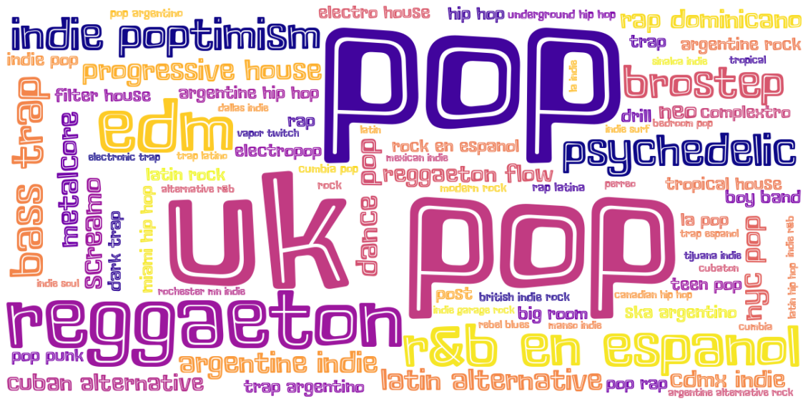
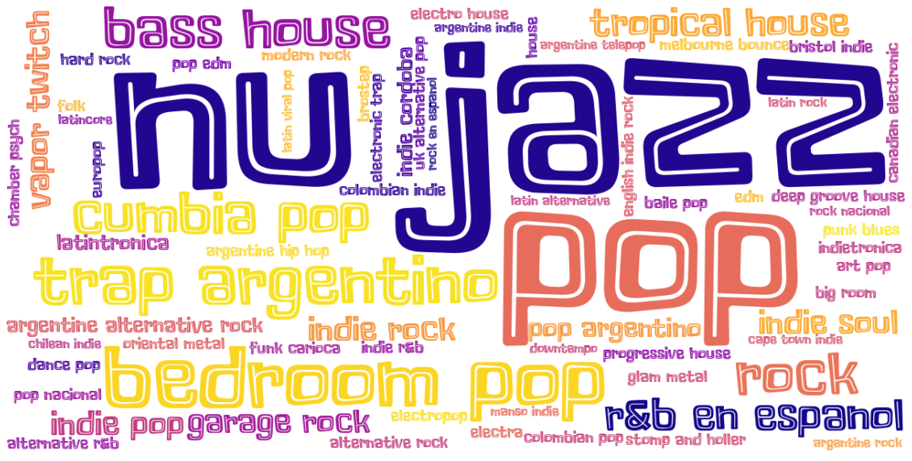

Sistema de recomendación para el Lollapalooza Argentina 2020
Formulación del problema
Etapa 0
La etapa inicial en todo sistema que involucre técnicas de Machine Learning, como este sistema de recomendación, consiste en definir el objetivo del proyecto y plantear las preguntas que se quieren responder.
¿Cuál es el roadmap que más me va a gustar en el Lollapalooza Argentina 2020?
Una vez definida la pregunta motivadora del proyecto, surgen naturalmente otras preguntas relacionadas que servirán para definir el enfoque que se le dará al problema
- ¿Qué datos necesito para realizar la recomendación?
- ¿Qué datos tengo?
- ¿Qué datos me faltan?
- ¿Cómo los obtengo?
Vamos por partes...
¿Qué datos necesito? Para armar un sistema de recomendación es necesario contar con información relacionada al objeto a recomendar (películas, canciones, recetas, o artistas, como en este caso) y datos que permitan caracterizar los gustos de cada usuario para hacer una recomendación personalizada y que sea acorde a las preferencias de cada persona.
¿Qué datos tengo? Los datos con los que contamos son los propios del festival: el lineup y las fechas en las que tocarán los más de 100 artistas que participarán en el festival.
¿Qué datos me faltan? Los datos que nos faltan son los que permitirán caracterizar con distintos atributos a cada artista y a cada usuario con sus gustos musicales y sus expectaticas para el festival.
¿Cómo los obtengo? Esta pregunta puede tener diversas respuestas. Para la información relacionada a los usuarios se confeccionará un cuestionario con preguntas que permitan conocer los aspectos claves que condicionarán las recomendaciones. Para la información relacionada a los distintos artistas, se realizarán consultas automatizadas con supervisión manual a diversos sitios que contengan información de distintas características de los artistas, como Spotify y Wikipedia.
Recolección de datos
Etapa 1
Una vez definidos los datos que se utilizarán para el sistema de recomendación, debemos comenzar con la etapa de recolección de dichos datos.
Comenzaremos por caracterizar a cada artista por la información musical disponible en Spotify para luego complementarla con datos no musicales de diversas fuentes de información como Wikipedia.
Spotify cuenta con un conjunto de herramientas para desarrolladores que permiten realizar consultas y obtener información sobre los distintos artistas, álbumes y canciones de cada uno. Aprovechando estas herramientas desarrollamos un programa que automatiza la descarga de información de los artistas que participarán en el festival y luego la combinamos con otras fuentes de información complementaria para mejorar la caracterización de cada participante. De cada artista se obtuvo:
- Seguidores: cantidad de usuarios siguiendo este artista.
- Popularidad: índice que indica cuán popular es un artista.
- Géneros: variedad de géneros musicales compuestos por el artista.
- Artistas relacionados: artistas que por afinidad musical u otros factores son "cercanos" o parecidos.
- Géneros relacionados: géneros compuestos por los artistas relacionados.
- Top tracks: pistas o canciones más conocidas.
- Audio features: características musicales de los top tracks de cada artista, entre los que se destacan
- Acousticness: medida de confianza que indica si un track es acústico o no.
- Daceability: medida de cuán "bailable" es un tema basándose en el tempo, ritmo, estabilidad y otros factores musicales.
- Energy: nivel que indica la percepción de intensidad y actividad de la canción.
- Instrumentalness: medida de la instrumentalidad de una canción en relación con la utilización de la voz.
- Loudness: nivel del sonido en dB.
- Speechiness: nivel de palabras habladas en la canción en relación a la música.
- Valence: medida de la "positividad" de la canción.
- Tempo: duración del pulso en la canción.
- Nacionalidad: país de origen.
- First release: año del primer lanzamiento del artista
Análisis descriptivo y exploratorio (EDA)
Etapa 2
Una vez finalizada la etapa de adquisición de datos, comienza la etapa de exploración y análisis descriptivo de los mismos. Aquí realizamos diversos análisis para estudiar la composición musical del festival, estudiamos los géneros más representados, caracterizamos a los artistas basándonos en los atributos musicales de sus top tracks, el año de su primer lanzamiento y si son artistas nacionales o internacionales.
Análisis de géneros musicales

Para cada día se confeccionó una Word Cloud, donde se visualizan todos los géneros representados, siendo los más visibles los que mayor presencia tienen en ese día en particular.
Día 1
El primer día del festival tiene como artistas principales a Travis Scott y a Martin Garrix, ambos pertenecientes al top five de seguidores en todo el festival.
Cuenta con la participación de varios artistas y bandas nacionales, siendo este el día con mayor representación local con un 40% del line up del día y 60% de géneros en español.
Día 2
El segundo día del festival tiene como artistas principales a The Strokes y a Gwen Stefani, que tienen una popularidad similar a la de Armin Van Bureen, quienes se ubican en la segunda mitad del top ten de popularidad.
En cuanto a géneros, tenemos una gran presencia de bandas de Pop, Rock moderno e Indie Pop.

Día 3
El tercer día tiene como artistas principales a Guns N' Roses y a Lana del Rey y es el día más internacional del festival, con más del 70% de bandas extranjeras. Si bien los Guns son la segunda banda más popular del festival después de Alan Walker, quien también aparece en esta fecha, el Rock no está entre los géneros más representados del día.
Análisis de atributos musicales
Si bien el género permite definir el tipo de música y las características de las canciones que compone un artista, esta caracterización no es demasiado específica y podemos encontrar canciones completamente diferentes que pertenecen a un mismo género. Por eso surge la necesidad de realizar un análisis que sea exclusivamente basado en características musicales, sin tener en cuenta a qué género pertenecen. En los radar plots que se muestran a continuación se ve la caracterización musical de los top tracks de los artistas de cada día.
La música a través del tiempo
Los artistas del festival son en su mayor parte artistas recientes:
- El 45% de ellos publicó su primer álbum entre el 2015 y el 2019, encontrándose en este segmento a los artistas de trap argentino, de indie y hip hop moderno
- El 70% lo hizo durante la última década. Ésta se caraterizó por la música electrónica, el pop y el reggaetón.
- En el otro extremo, hay unos 6 artistas que iniciaron su carrera antes de la década de los '90, entre los que predomina el rock como género característico.
Machine Learning: segmentación automática de artistas
Etapa 3
Una vez concluida la etapa de análisis descriptivo y exploratorio, utilizamos distintas técnicas de machine learning no supervisado para segmentar de manera automática (clusterizar) a todos los artistas que participarán del festival. Entre los métodos ensayados caben mencionar a los algoritmos t-SNE, PCA e IsoMap para reducción de dimensionalidad y distintos algoritmos de clustering como k-Means, agglomerative clustering y DBSCAN para segmentación.
Entre los resultados obtenidos, los más destacables fueron producidos por la conjunción de t-SNE y DBSCAN, cuya representación gráfica se ve a continuación:
Conclusiones
Etapas siguientes
Los datos sobre los artistas del Lollapalooza provenientes de Spotify y sus respectivas páginas en Wikipedia permiten no sólo caracterizar en términos descriptivos la oferta musical del festival, sino también realizar análisis de clusters interesantes. Estos análisis, que encuadramos dentro de lo que se conoce como machine learning no supervisado, permiten el descubrimiento de insights relevantes en una estructura de datos que, a priori, no son evidentes. La obtención de clusters que sean útiles para un sistema de recomendación es un primer paso necesario para el desarrollo de una herramienta de este tipo, pero no podemos limitarnos a esto sino que es necesario poder caracterizar correctamente a los espectadores para poder recomendarles un roadmap personalizado, que se ajuste a sus gustos y preferencias.
Para lograr la caracterización de los usuarios, se utilizará una serie de preguntas a modo de cuestionario para conocer las preferencias musicales y otros aspectos de cada asistente. Como preguntas clave que consideramos necesarias podemos mencionar:
- ¿Qué edad tenés?
- ¿Qué bandas viniste a ver? (Máximo 3 bandas)
- ¿Cuántas ganas tenés de sorprenderte?
- ¿Qué tan seguido vas a festivales/recitales?
Una vez obtenida la información de los asistentes, sumado al análisis realizado sobre los artistas y los clusters formados, se deberá confeccionar un conjunto de reglas que permitan armar un roadmap que se ajuste a los datos recolectados. Dichas reglas serán de índole musical y comercial y son necesarias para desarrollar el algoritmo de recomendación.